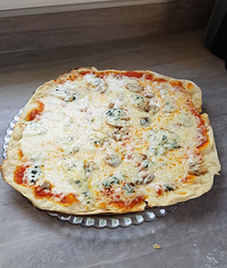

Tapenade olives vertes
250 gr d'Olives
1 c à café de capre,
5 ou 6 anchois
3/4 d'un verre d'huile
Herbes de provence
Mixer

Tarte au ciron méringuée
1 Pâte sablée/ Crème au citron150 ml de jus de citron, 1zeste
150 g de sucre,3 oeufs
3 c. à S. de maizéna
75g de beurre
Meringue: Blc en neige ferme
2 blcs d'oeufs,2 c.à S de sucre

Pizza 4 fromages
1 pâte à PizzaSauce tomate "maisons"
origan, 4 sortes de fromages
différents, et faire cuire
dans un four préchauffer au
plus chaud 280° ou au four
a bois.

Salade estivale
1 Tomate5 Asperges
5/6 Radis
Charcuterie
Vinaigrette à l'huile d'olive